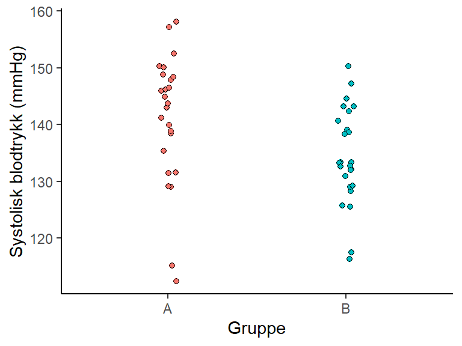
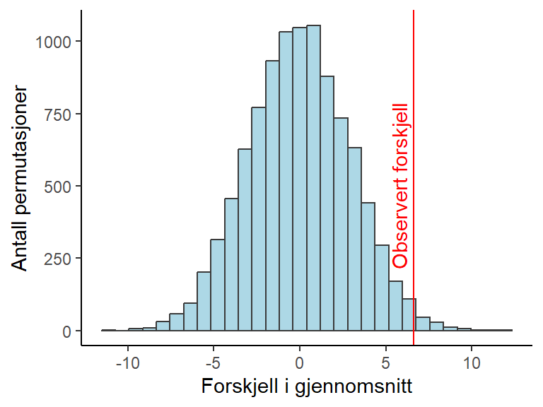
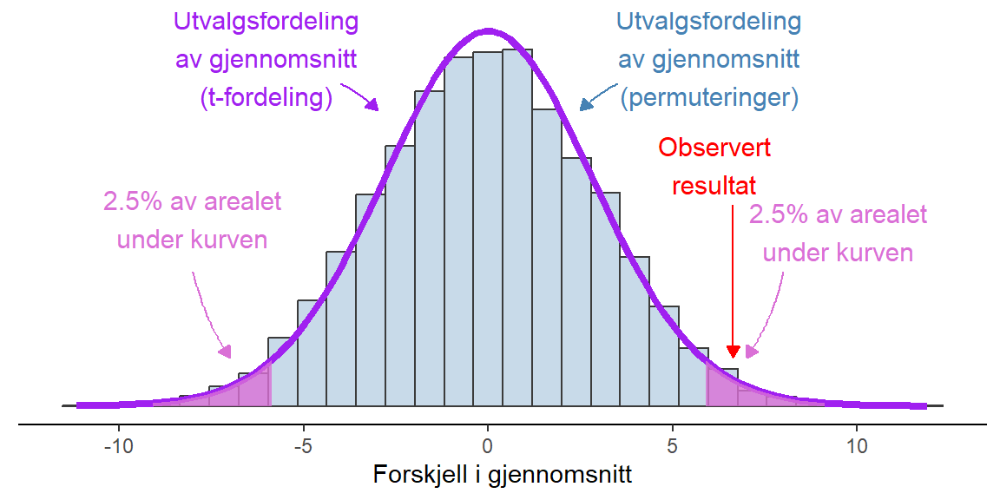

8 Statistisk inferens
Vi mennesker er gode på å trekke slutninger om hvordan verden fungerer basert på et begrenset antall observasjoner. Denne evne til å lage mentale modeller av verden kan sies være et særtrekk i mennesket som gjort det mulig å skape avanserte sivilisasjoner. En mental modell, eller forståelse av hvordan verden henger sammen gir grunnlag for å samhandle med den, og forandre den. Noen ganger går det dessverre galt, vår mentale modell representerer ikke verden og utfall blir ikke hva vi forventer.
Innen vitenskapen prøver vi å systematisere prosessen som leder frem til ny kunnskap. Flere forskjellige filosofier blir brukt for å unngå å trekke falske slutninger om verden basert på data. Den filosofiske og statistiske skole som trolig blir mest brukt innen vitenskapen i dag kalles for frekventisme. Denne modulen vil introdusere statistisk inferens med fokus på frekventisme. Statistisk inferens er det å trekke konklusjoner om en populasjon basert på et utvalg. Vi ønsker å si noe om noe vi ikke observerer, basert på et begrenset datautvalg.
8.1 Populasjon, utvalg og målet med statistisk inferens
En populasjon i statistikken er som nevnes i Thrane (2020) en samling av alle mulige observasjoner med et sett med spesifikke karakteristikker. Denne definisjonen brukes på litt forskjellige måter, men for at den skal være av betydning i vår videre diskusjon bør den si noe om hva vi ønsker å måle og i hvilken kontekst. Kanskje er vi interesserte i IQ (hva) hos menn og kvinner mellom 18 og 65 år i Norge (kontekst). Vi har ikke mulighet å undersøke hele populasjonen, men et lite utvalg. Målet med å undersøke et utvalg er å si noe om populasjonen. I utvalget kan vi beregne noen deskriptive statistikker som gjennomsnitt og spredning. Samtidig som dette sier noe om dataene som vi har er det også et estimat av parametere i populasjonen. I den enkleste forståelsen av begrepet modell, kan gjennomsnitt og spredning fungere som en modell av populasjonen. Basert på disse kan vi trekke slutninger om populasjonen.
En parameter er en kvantitativ egenskap hos en populasjon. En populasjon er i sin tur en samling av mulige verdier med et sett av gitte egenskaper. En parameter hos populasjonen kan være dess gjennomsitt (iblant kalt \(\mu\)) eller standardavvik (\(\sigma\)). Når vi estimerer gjennsomnitt og standardavvik i et utvalg gir vi disse kvantiteterne andra symboler, \(\bar{x}\) og \(s\). Disse er estimater av populasjonsgjennomsnittet og standardavviket (Dodge 2008).
Dodge, Yadolah. 2008. The Concise Encyclopedia of Statistics. 1st. ed. Springer Reference. New York: Springer.
📹 Forelesning: Intro til statistisk inferens.
8.1.1 Utvalg og generalisering
For å trekke korrekte slutninger om en populasjon kreves at utvalget er representativt for populasjonen. Når utvalget representerer den populasjon man ønsker å undersøke kan man gjøre den generalisering som det innebærer å trekke konklusjoner om populasjonen basert på utvalget. Ideelt sett trekkes et utvalg fra populasjonen helt tilfeldig. Dette gir en garanti mot at utvalget ikke skiller seg fra populasjonen i noen viktige karakteristikker. I forskningen er dette i praksis veldig vanskelig.
Tenkt deg at du ønsker å studere effekten av trening i den voksne norske befolkningen, vi ønsker å generalisere resultater fra studien til hele befolkningen, menn, kvinner, unge, gamle, friske og individer som sliter med noen helseplager. Vi går ut i lokalavisen å sier at vi gjennomfører en studie som bruker høyintensiv trening for å forbedre fysisk prestasjonsevne. Interesserte kan melde seg til studien ved å ringe eller sende en e-post. Denne rekrutteringen vil introdusere en karakteristikk i utvalget som ikke kan sies representere populasjonen, dette da individer som ønsker å gjennomføre høyintensiv trening melder seg til studien.
Hvis vi prøver å gjøre noe åt dette kan vi sende ut et påmeldingsskjema til la oss si 1000 privatadresser i Lillehammer. Vi vil fortsatt sitte igjen med et utvalg som ikke representerer populasjonen, men vi har nå mulighet å undersøke de som ikke melder seg på. Vi kan spørre de som ikke er interesserte i å delta hvorfor det er slik, dette kan si noe om hva utvalget representerer og hvor langt vi kan generalisere resultater fra studien.
I praksis er ulike former av bekvemmelighetsutvalg trolig den vanligste formen for utvalg i mye av forskningen. Med bekvemmelighetsutvalg mener vi et utvalg som vi har tilgang til. En vel undersøkt populasjon innen fysiologisk idrettsforskning er mannlige studenter ved idrettsutdanninger.
8.2 Utvalg og estimering
Når vi har et utvalg så kan vi måle noe og dermed estimere den sanne verdien1 i populasjonen. Da vi ønsker å si noe om den sanne verdien sier dette også noe om at vi kan være mer eller mindre sikre på et estimat, og vi kan ha feil. Vi må ha verktøy som tar hensyn til begge disse konseptene som er tett sammenkoblet nemlig, presisjon og feilrate. Vi kan starte med å konstatere at all estimering gjøres med usikkerhet, men hvordan kan vi si noe om usikkerheten. Vi vil nå gjennomføre et tankeeksperiment.
1 I frekventisme ser vi på populasjonsparameteren som en (teoretisk) gitt verdi som ikke forandres.
I frekventisme er det mulig å tenke seg at vi i teorien kan trekke flere uavhengige utvalg fra en populasjon. La oss gjøre dette, vi trekker flere utvalg med størrelse 10 (10 observasjoner). Fra hvert utvalg kan vi beregne gjennomsnitt og standardavvik. Vi legger sammen gjennomsnittene fra de mange utvalgene i en ny fordeling, en fordeling av gjennomsnitt basert på utvalg fra en populasjon. Det viser seg at en fordeling av gjennomsnitt har det samme gjennomsnittet som populasjonen og at spredningen (standardavviket) i denne fordelingen bestemmes av størrelsen på utvalgene. Standardfeilen er spredningen i en fordeling av gjennomsnitt fra flere utvalg. Standardfeilen (SE, standard error på engelsk) beregnes som
\[SE = \frac{\sigma}{\sqrt{n}}\] hvor \(\sigma\) er standardavviket i populasjonen og \(n\) er størrelsen på utvalget. Problemet her er at vi ikke kjenner \(\sigma\), isteden vil vi bruke det estimerte standardavviket fra et utvalg for å gjennomføre beregning.
\[SE = \frac{s}{\sqrt{n}}\] Det viser seg at når vi trekker flere utvalg så vil vi i det lange løp, i gjennomsnitt, få standardfeil i utvalgene som tilsvarer standardavviket i utvalgsfordelingen. Dette er et fantastisk resultat, og grunnen til at vi kan si noe om populasjonen basert på et utvalg.
8.2.1 Estimere et gjennomsnitt, et eksempel
I Norge 2022 ble 52026 fødsler registrert i Medisinsk fødselsregister. Gjennomsnittet for fødselsvekt var 3485 gram og standardavviket var 587 gram. Vi kan si at vi dermed kjenner til disse egenskapene i populasjonen, men hvor godt hadde vi klart å estimere disse verdiene hvis vi hadde trukket et utvalg på 10 barn fra populasjonen. For å besvare det spørsmålet kan vi lage et eksperiment hvor vi trekker 1000 utvalg fra populasjonen og beregner gjennomsnitt i hvert utvalg. Den resulterende utvalgfordelingen vil gi et bilde av hvor godt vi kan estimere populasjonen basert på et utvalg. Som vi ser i Figur 8.1, i panelet med utvalgsfordeling kan et gjennomsnitt forventes være så lite som mindre enn 3000 og så stort som større enn 4000 g. Hvis utvalgsstørrelsen istedenfor 10 hadde vært 100, ville vi sett at utvalgsfordelingen var mer samlet rundt gjennomsnittet.
Hva er da poenget med dette? I den frekventistiske statistikken tenker vi oss at vi gjør dette eksperimentet hver gang vi skal estimere en populasjonsparameter. Usikkerheten i estimatet representeres av spredningen i utvalgsfordelingen. Men i praksis gjør vi jo ikke dette eksperimentet, isteden estimerer vi en populasjonsparameter som gjennomsnittet en gang og bruker spredningen i utvalget for å også estimerer spredningen i utvalgsfordelingen.
8.3 Estimering av spredningen i utvalgsfordelingen
Som vi kan se over i beregningen av standardfeilen så er den avhengig av utvalgsstørrelsen. Når utvalgsstørrelsen (\(n\)) er større blir standardfeilen mindre. Det betyr at fordelingen av gjennomsnitt fra utvalgene vil være tettere samlet kring den sanne verdien, populasjonsgjennomsnittet, når utvalgsstørrelsen er større. Vi så dette i Figur 8.1.
En annen observasjon som kan gjøres av utvalgsfordelingen er at den vil ha en lignende form uansett underliggende populasjonsfordeling. Fordelingen vil ligne på det som kalles normalfordeling. Normalfordelingen bestemmes av et gjennomsnitt og et standardavvik. Dette betyr at vi i mange tilfeller kan bruke estimerte gjennomsnitt og standardavvik for å lage en modell av utvalgsfordelingen.
For enda bedre presisjon i estimeringen av en utvalgsfordeling når utvalgsstørrelsen er liten brukes en \(t\)-fordeling. Denne fordelingen tar også hensyn til utvalgsstørrelsen. Da utvalgsfordelingen har kjente egenskaper (normalfordelingen og \(t\)-fordelingen) så kan vi bruke denne for å si noe om hvordan vi ser for oss at en teoretisk fordeling av flere gjennomsnitt ser ut.
Men hvor sikre kan vi være på estimatet av spredningen i en utvalgsfordeling? Spredningen i utvalgsfordelingen er altså spredningen av for eksempel gjennomsnitt hvis vi hadde trukket flere utvalg fra den samme populasjonen og beregnet gjennomsnitt for hvert av dem. Vi estimerer denne spredningen ved å beregne standardfeilen (SE). Hvis vi bruker standardavviket i hvert utvalg som et estimat for standardavviket i populasjonen, så kan vi også beregne standardavviket i utvalgsfordelingen. Dette gjør vi, som vi allerede har sett ved å dele standardavviket i populasjonen på kvadratroten av utvalgsstørrelsen. Hvis vi så hadde gjort dette som et eksperimentet hvor vi beregner standardfeilen mange ganger, så ville vi kunne se at vi i gjennomsnitt, i de fleste tilfeller være veldig nærme den faktiske variasjonen (se Figur 8.2).
8.4 Målet og problemet med statistisk inferens
Så hva er problemet? Vi kan altså estimerer verdier i populasjonen ved hjelp av utvalg, og er vi usikre så kan vi alltid lage et eksperiment hvor vi trekker flere utvalg? I praksis har vi bare et begrenset utvalg, vi har veldig sjelden flere enn et utvalg og aldri 1000. Vi må altså stole på at estimatene vi skaper ved hjelp av et utvalg gir en god representasjon av populasjonen. Men hvordan kan vi vite når vi faktisk har rett?
8.5 Konfidensintervaller
Et konfidensintervall tar utgangspunkt i den estimerte utvalgsfordelingen. Basert på utvalgsfordelingen lager vi et intervall som fanger inn en gitt prosent av alle mulige gjennomsnitt fra en teoretisk samling av utvalg. Av tradisjon brukes ofte et 95% intervall. Et 95% intervall gir oss et intervall av gjennomsnittsverdier som inneholder 95% av alle utvalg ved en (teoretisk) repeterte utvalgsprosess. Dette sier også noe om definisjonen av konfidensintervallet. Ved repeterte utvalg inneholder konfidensintervallene populasjonsparameteren (for eksempel gjennomsnittet) i 95% av tilfellene. Dessverre vet vi ikke om et spesifikt intervall gjør det eller ikke.
Man kan argumentere for at definisjonen i (Thrane 2020, sid. 92) gir en feilaktig bilde av konfidensintervallet. Det er altså ikke slik at et konfidensintervall i seg har en sikkerhet. Et enkelt intervall inneholder populasjonsparameteren, eller så inneholder det ikke parameteren. Prosenttallet som vi setter på intervallet sier noe om prosessen med repeterte utvalg. Det sier noe om hvor ofte vi tar feil ved repeterte utvalg fra den samme populasjonen.
Thrane, Christer. 2020. Statistisk Dataanalyse På 1-2-3. Cappelen Damm.
Hvis vi forandrer frekvensen med hvilken vi kan ha feil fra 5% (95% konfidensintervall) til 10% (90% konfidensintervall) vil intervallet bli mindre. Altså med en større risk at enkelte konfidensintervall ikke inneholder populasjonsparameteren får vi et intervall som bedre beskriver populasjonsparameteren (hvis vi har rett konfidensintervall). Vi kan gå andre veien også, et 99% konfidensintervall er et intervall som holder flere teoretiske verdier som mulige for populasjonsparameteren, dette intervallet kommer fra en samling intervaller hvor bare 1 av 100 ikke finner den sanne verdien. Igjen, vi vet ikke hvis vi har et intervall som er rett eller galt.
Utvalgsstørrelsen vil påvirke bredden på intervallene, men ved repeterte utvalg vil vi til tross av dette ha feil i en gitt andel av tilfellene.
8.5.1 Beregne et konfidensintervall
For å beregne et konfidensintervall trenger vi et gjennomsnitt med tilhørende standardfeil og en funksjon som beskriver en sannsynlighetsfordeling. Vi har allerede snakket om normalfordelingen, dette er et eksempel på en sannsynlighetsfordeling. Normalfordelingen er en symmetrisk fordeling som beskrives av to parametere, gjennomsnitt og standardavvik. Vi er interessert i å bruke normalfordelingen for å skape et intervall som inkluderer, la oss si, 95% av alle mulige verdier, gitt at vi har et gjennomsnitt og en spredning (standardfeilen).
\[\bar{x} \pm z_{\alpha/2} \times \frac{s}{\sqrt{n}}\] I formelen over er \(\bar{x}\) gjennomsnittet, \(s\) standardavviket, \(n\) antall observasjoner og \(z_{\alpha/2}\) er kvantilen vi ønsker til en normalfordeling og den tilsvarende faktoren vi trenger for å fange denne kvantilen. For et 95% konfidensintervall er \(z_{\alpha/2} = 1.96\). \(\alpha\) er den parameter som bestemmer sannsynligheten for å gjøre feilen at ikke fange populasjonsparameteren ved repeterte utvalg. For et 95% konfidensintervall er \(\alpha = 0.05\) og \(\alpha/2 = 0.025\). \(\alpha/2 = 0.025\) betyr i sin tur at vi lar 2.5% av sannsynlighetsmassen i endene av fordelingen (halene) representere tilfellene hvor vi aksepterer å ha feil.
Vi trekker et utvalg med størrelse 10 fra populasjonen av registrerte fødselvekter i Norge 2022. Tallene er:
| Fødselsvekter i Norge 2022 |
| Vekt |
|---|
| 3117 |
| 3593 |
| 2994 |
| 4421 |
| 3678 |
| 3003 |
| 3771 |
| 3918 |
| 3823 |
| 3306 |
Gjennomsnittet er 3563 og standardavviket er 458. Vi kan bruke disse verdiene til å beregne konfidensintervallet.
\[3563 \pm 1.96 \times \frac{485}{\sqrt{10}}\] hvilket gir et intervall fra 3279 til 3847 gram.
I tekst kan vi sammenfatte våre beregninger som:
Gjennomsnittet av fødselvektene i Norge 2022 er estimert til 3563 gram med et 95% konfidensintervall på [3279, 3847] gram.
8.5.2 t-fordelingen
Når vi bruker små utvalg er det bedre å bruke en t-fordelning når vi lager konfidensintervaller. En t-fordeling er en familie av fordelinger som likt normalfordelingen er symmetriske med tyngdepunkt ved sentrum. Formen på fordelingen bestemmes av antallet frihetsgrader, noe som i sin tur bestemmes av antallet observasjoner. Når antall frihetsgrader er lavt vil fordelingen være bredere og ha mer masse lengre ut fra sentrum. Når antallet frihetsgrader øker vil fordelingen nærme seg en normalfordeling (se Figur 8.3). Når vi beregner et konfidensintervall for et gjennomsnitt bruker vi \(n-1\) frihetsgrader. I eksemplet med 10 observasjoner vil vi bruke en t-fordeling med 9 frihetsgrader.
Det at vi fanger inn mer av fordelingen lengre ut fra sentrum gjør at vi kan være mer sikre på at vi unngår å lure oss selve hva gjelder populasjonsparameteren. Hvis vi definerer feilraten som antallet 95% konfidensintervaller som ikke fanger inn populasjonsparameteren, vil vi ved bruk av en t-fordeling ha en feilrate som ikke overstiger 5% ved repeterte forsøk, 95% av konfidensintervallene vil faktisk fange populasjonsparameteren. Normalfordelingen og små utvalg vil derimot gi oss 95% konfidensintervall som ikke holder hva de lover, en lavere andel enn 95% vil inneholde populasjonsparameteren. I Figur 8.3 C har viser vi resultatet av 50 simulerte utvalg fra fødselsvekt-dataene. Over hvert panel i figuren angis feilraten fra 2000 simuleringer. Når vi har små utvalg (n = 10) vil feilraten være større når vi bruker normalfordelingen som grunn for konfidensintervallene.

I din mer avanserte statistikkbok finner du kanskje følgende formel for et konfidensintervall for gjennomsnittet basert på t-fordelingen:
\[\bar{x} \pm t_{\text{df}=9,\alpha/2} \times \frac{s}{\sqrt{n}}\] \(t_{\text{df}=9,\alpha/2}\) er faktoren som angir hvor mange standardfeil vi må bevege oss fra gjennomsnittet for å finne konfidensintervallets grenser, gitt at vi bestemmer oss for \(\alpha\). For et 95% konfidensintervall med antall frihetsgrader satt til 10 er faktoren 2.262.
Konfidensintervaller er altså en måte å uttrykke usikkerhet på, men det er viktig å huske hva de beskriver. Et 95% konfidensintervall sier at ved repeterte utvalg/eksperimenter vil 95% av konfidensintervallene, som det observerte intervallet kommer fra, fange inn den parameter vi ønsker å estimere fra populasjonen (populasjonsparameteren). Men vi vet ikke om vårt intervall faktisk gjør det, vi kjenner bare til sannsynligheten for at vi gjør det i det lange løp.
8.6 Hypotesetesting og p-verdier
📹 Forelesning: P-verdier og hypotesetesting.
I statistikken har vi mulighet å teste hvor kompatible våre data er med en gitt hypotese. Vi kan formulere en hypotese for kontinuerlig data gjennom å velge et tall som vi tester mot. Den frekventistiske statistikken bruker nullhypoteser og rundt denne hypotesen bygger vi opp en estimert utvalgsfordeling. Vi kan nå besvare spørsmålet: Gitt att nullhypotesen er sann, hvor sannsynlig er det at vi får et resultat så ekstremt som det vi observerer, eller enda mer ekstremt?
Denne definisjonen er dessverre ikke helt intuitiv, vi lager et eksempel under for å bedre forstå den. La oss si at vi gjennomfører et forsøk hvor vi studerer effekten av fysisk aktivitet på blodtrykk. De rekrutterte deltakerne (n=50) som i utgangpunkt har høyt blodtrykk fordeles tilfeldig (randomisert) til to grupper. Gruppe A får ingen retningslinjer for fysisk aktivitet, gruppe B får oppfølging fra en personlig trener. Etter en intervensjonsperiode tester vi blodtrykket (Figur 8.4).
Fra studien er det mulig å formulere to hypoteser, en nullhypotese (\(\text{H}_0\)) sier at det ikke er noen forskjell mellom behandlingene. Den alternative hypotesen (\(\text{H}_0\)) sier derimot at det er en forskjell i blodtrykk mellom behandlingene. Hypotesene omhandler populasjonen, vi ønsker altså å si noe om hvordan behandlingen virker, ikke bare i utvalget, men også i populasjonen som deltakerne kommer fra. Filosofiske argumenter gir at det er vanskelig å bevise en hypotese men enklere å motbevise den. I statistikken prøver vi derfor vanligvis å motbevise (falsifisere) nullhypotesen, og vi sier at vi tester mot den. Vi setter opp testet sånn at om testresultatet er tilstrekkelig ekstremt gitt at nullhypotesen er sann så avkrefter vi den, eller finner den mindre trolig enn en alternative hypotese.
\[\text{H}_0: \mu_1 = \mu_2\]
\[\text{H}_A: \mu_1 \neq \mu_2\]

Datane vi samlet inn forteller at forskjellen mellom gruppene i systolisk blodtrykk etter intervensjonen er 6.6 mmHg. Hvis nullhypotesen er sann, hvor usannsynlig er det observerte resultatet? For å etterligne en nullhypotese skaper vi en kunstig utvalgsfordeling. Denne fordelingen lager vi gjennom å gi gruppetilhørighet til våre observasjoner helt tilfeldig, 10 000 ganger. Vi trekker altså tilfeldig deltakere fra utvalget og plasserer de i to grupper, la oss si, 라 og 락. Hver gang beregner vi et gjennomsnitt mellom gruppene som nå er en blanding av individer fra de faktiske intervensjonsgruppene. Denne fordelingen ligner hva vi kunne forvente oss vi tok flere utvalg fra en populasjon hvor nullhypotesen faktisk var sann. Gjennomsnittene samler vi opp og så beregner vi hvor mange gjennomsnitt som er så ekstreme eller enda mer ekstreme sammenlignet med det observerte gjennomsnittet fra intervensjonen. Vi sammenligner altså resultatet fra intervensjonen med gjennomsnitt som er mulige hvis effekten av tilfeldigheter er større enn intervensjonen. Denne teknikken kalles for permutasjonstest og resultatet finner vi i Figur 8.5.

Det viser seg at bare 0.0112% av gjennomsnittene i den permuterte fordelingen er mer ekstreme enn det gjennomsnitt vi fikk fra intervensjonen. Er dette nok for å forkaste nullhypotesen? La oss si at vi ønsker å sammenligne resultatene fra intervensjonen med alle ekstreme resultater i permuteringstesten, dette betyr at vi også vil ta med de mer ekstreme negative forskjellene i beregningen. Det viser seg at 0.0235% av gjennomsnittene i den permuterte fordelingen er mer ekstreme enn det observerte gjennomsnittet når vi inkluderer gjennomsnitt som er større enn 6.6 mmHg og mindre enn -6.6 mmHg (Figur 8.6).
Vi har nå beregnet to p-verdier. Den første varianten er p-verdien som tilsvarer en ensidig test, vi sammenligner det observerte gjennomsnittet med gjennomsnittene i permutasjonsfordelingen som er større enn det observerte gjennomsnittet. Den andre varianten er en tosidig test, vi sammenligner det observerte gjennomsnittet med alle ekstreme gjennomsnitt i permutasjonsfordelingen.
Så hva bruker vi p-verdien til? I frekvensitisks statistikk setter vi vanligvis en grense for hva som er statistisk signifikant. Vi sier at en forskjell er signifikant hvis den er mer ekstrem enn vår grense. Denne grensen settes ofte til 5%.2 La oss si at nullhyotesen faktisk er sann, det finnes ingen forskjell mellom behandlingene i populasjonen. I denne situasjonen vil vi fortsatt ha mulighet å observere ekstreme forskjeller i et utvalg. Når vi setter grensen for et signifikant resultat til 5% aksepterer vi at vå prosedyre tar feil i 5% av tilfellene. Vi vet ikke om resultatet vi har observert er et slik resultat, men vi kan være sikre på at i det lange løp så vil vi bare ta fel 1 gang av 20.
2 Hvorfor 5%? Det korte svaret på dette spørsmålet er, tradisjon. Vanligvis sies det at statistikeren Ronald Fisher etablerte 5% som grense for statistisk signifikant, men dette var trolig ikke nytt på 1920-tallet (Cowles and Davis 1982).
Cowles, Michael, and Caroline Davis. 1982. On the Origins of the. 05 Level of Statistical Significance. American Psychologist 37 (5): 553.
Hvis vi bruker en signifikansnivå på 5% i vårt eksempel hvor p-verdien den tosidige testen er 0.0235% så vil vi alstå si at resultatet er signifikant. Vi konkluderer med at resultatet er så pass ekstremt at det tilhører de 5% mest ekstreme resultatene som hadde blitt observert hvis nullhypotesen er sann. Vi finner altså at vi har svak støtte for nullhypotesen og vi forkaster den til fordel for den alternative hypotesen.
Det at forkaste nullhypotesen, hvis den faktisk er sann, kalles for å gjøre en type 1 feil. Ved hjelp av signifikansnivået spesifiserer vi hvor ofte vi aksepterer å gjøre en type 1 feil. Når vi setter grensen til 5% vil vi gjøre feil i 1 studie av 20. Hvis vi setter grensen til 10% vil vi gjøre feil i 1 av 10 studier, og hvis vi setter grensen til 1% (p = 0.01), vil vi si at nullhypotesen er falsk til tross for at den er sann i 1 av 100 studier. Det å sette en grense for p-verdien handler altså om å kontrollere feilraten i det lange løp.
8.6.1 Parametrisk og ikke-parametrisk statistikk
I eksemplet over brukte vi en permutasjonstest for å bestemme om den forskjell vi observerte mellom gruppene var ekstrem nok til å forkaste hypotesen at det ikke er en forskjell mellom behandlingen i populasjonen. Denne testen er en så kalt ikke-parametrisk test, den bruker ikke en teoretisk fordeling for å beregne testresultatet (p-verdien). Hvis vi er villige til å anta at dataene er normalfordelt og at variasjonen er lik i begge grupper3 så kan vi bruke en test for å sammenligne to gjennomsnitt som bruker en sannsynlighetsfordeling for å lage en modell over utvalgsfordelingen. Denne testen kalles for en t-test.
3 Antagelser for parametrisk test av gjennomsnitt i to uavhengige grupper, også kalt en t-test, er at dataene er normalfordelt, noe som vil gi normalfordeling i en utvalgsfordeling. Da utvalgsfordelingen er helt hypotetisk utvidder man denne antaglsen til å inkluderer dataene som man observerer. En annen antagelse er at dataene er uavhengige, dette betyr at det ikke finnes noen slektskap i dataene, for eksempel ikke flere datapunkter fra det samme individet. Til sist antar vi at variasjonen er lik i begge gruppene, stengt tatt at dette er fallet i populasjonen. Det finnes måter å 랎este disse antagelsene på (se 11.4.3 i Navarro and Foxcroft (2018), men disse testene er ikke gode for å oppdage avvikelser fra antagleser i små utvalg. Dette betyr at antaglser er noe vi i stor grad må akseptere uten å kunne teste dem.
t-testen bruker t-fordelingen for å lage en modell over utvalgsfordelingen, noe som vises i Figur 8.7. Vi ser at t-fordelingen i stort sett gir det samme resultatet som metoden som bruker permuteringer, men her bruker vi bare det ene utvalget og estimerer utvalgsfordelingn. Akkurat som for beregningen av konfidensintervallet over bruker vi en standardfeil for å bestemme vidden på utvalgsfordelingen, men vi setter sentrum til 0, altså vår nullhypotese. Standardfeilen for en t-test av to gjennomsnitt beregnes fra variasjonen i dataene og antallet observasjoner (se Navarro and Foxcroft (2018) for detaljer, Avsnitt 11.3).

Basert på t-fordelingen kan vi beregne en kritisk verdi, verdien på forskjellen mellom grupper som kreves for å tolke resultatet som statistisk signifikant. Ved bruk av en tosidig t-test er den kritiske verdien i forskjellen mellom gruppene ± 5.71 mmHg. Hvis forskjellen mellom gruppene er mer ekstrem enn denne verdien, noe som tilsvarer en p-verdi < 0.05 vil vi forkaste nullhypotesen. For permuteringstesten er de samme kritiske verdiene -5.68 og 5.69.
Vi har nå illustrert at vi kan tenke på en p-verdi som en andel av repeterte utvalg under nullhypotesen. Vi setter en grense for hvor mange repeterte utvalg vi aksepterer å gjøre en type 1 feil, det å forkaste nullhypotesen til tross for at den er sann. Når vi beregner p-verdien beregner vi en proporsjon, andelen av repeterte utvalg som gir oss et resultat som er mer ekstremt enn det vi observerte.
8.7 Type 2 feil, statistisk styrke og utvalgsstørrelser
📹 Forelesning: Statistisk styrke.
Så langt har vi konstatert at vi kan gjøre en type 1 feil ved å forkaste nullhypotesen til tross for at den er riktig. Den frekventisktiske statistikken er opptatt av å kontrollere denne feilen, vi ønsker statistiske tester som har en gitt feilrate i det lange løp (over flere lignende, uavhengige studier). I tillegg til en type 1 feil kan vi også gjøre en annen feil. Ved å ikke forkaste nullhypotesen til tross for at ikke er riktig gjør vi en type 2 feil. Denne feilen krever litt mer arbeid fra oss som skal analysere dataene. Vi kan sette opp de to typene feil i en tabell som under.
| Nullhypotesen er | Sann | Falsk |
|---|---|---|
| Forkasted | Type-1 feil | Riktig avgjørelse |
| Ikke forkasted | Riktig avgjørelse | Type-2 feil |
I et scenario med to grupper som vi ønsker å sammenligne har vi formulert en nullhypotese som sier at det ikke finnes en forskjell mellom gruppene på populasjonsnivå. Før vi innhenter data formulerer vi også en alternativ hypotese. Vi lager denne alternative hypotesen basert på noen fakta vi allerede har om problemet. La oss ta fysisk aktivitet og blodtrykk som eksempel igjen.
En forandring i systolisk blodtrykk etter en behandling så stor som 5-10 mmHg kan sies være den minste forskjellen som er klinisk betydningsfull. Her kan vi argumentere for at en senkning av blodtrykk med 5-10 mmHg kreves for at en individ skal oppleve helsefordeler med behandlingen. Vi bruker 10 mmHg for å etablere en alternativ hypotese til nullhypotesen. Vi kan også formulere det som at 10 mmHg er den minste gjennomsnittlige senkingen av blodtrykk som vi er intresserte i å finne. Vi ønsker nå en statistisk test som oppdager denne forskjellen mellom to grupper, om den faktisk finnes. Evnen til en statistisk test å forkaste nullhypotesen til fordel for den alternative hypotesen kalles for statistisk styrke. Den statistiske styrken defineres som en minus den forventede raten med hvilken vi gjør type 2 feil (ofte sier vi \(1-\beta\), hvor \(\beta\) er grensen vi setter for å gjøre en type 2 feil). Det som påvirker den statistiske styrken er størrelsen på effekten (eller forskjellen mellom gruppen som i vårt eksempel), og størrelsen på utvalget.
I populasjonen som vi ønsker å undersøke er den gjennomsnittlige systoliske blotrykken 135 mmHg med en standardavvik på 20 mmHg. Vår alternative hypotese er at fysisk aktivitet senker blodtrykket med 10 mmHg. Disse tallene kan vi bruke for å beregne en standardisert effektstørrelse (\(d\)), denne er
\[d = \frac{H_a}{SD} = \frac{10}{20} = 0.5\].
En standardisert effektstørrelse er en måte å beskrive en effekt i termer av variasjonen. Hvor stor er effekten i forhold til den gjennomsnittlige variasjonen i populasjonen? Neste steg blir å bestemme hvilken statistisk styrke og hvor stor risiko for type 1 feil vi ønsker i testen. Her kan vi bruke en argumentasjon som går ut på at en type 1 feil er alvorligere enn type 2 feil. La oss si 4 ganger alvorligere, hvis vi ikke ønsker å gjøre en type 1 feil i mer enn 5% av repeterte studier kan vi leve med risikoen å gjøre en type 2 feil som er \(5\% \times 4 = 20\%\).
Vi har nu mulighet for å beregne antallet deltakere som kreves for å oppnå en statistisk styrke på 80%. Til denne beregning bruker vi følgende tall:
| Effektstørrelse | 0.5 |
| Risiko for type 1 feil (\(\alpha\)) | 5% |
| Risiko for type 2 feil (\(\beta\)) | 20% |
| Statistisk styrke (\(1-\beta\)) | 0.8 |
Ditt statistikkprogram (for eksempel Jamovi) kan beregne antallet deltakere som kreves for å oppnå en gitt statistisk styrke, resultatet fra en slik analyse kan beskrives i en figur hvor to hypoteser er representert som utvalgsfordelinger. Disse utvalgsfordelingene tilsvarer de to hypotesene gitt de parametre vi gir til programmet (se tabellen over). Den alternative hypotesen er sentrert over 0.5 og spredningen tilpasses vårt ønske om feilraten for type 1 og 2-feil. Ettersom spredningen i en utvalgsfordeling er proporsjonal til antallet observasjoner (deltakere i studien) vil dette resultatet kreve et gitt antall deltakere til vårt eksperiment.

En analyse av statistisk styrke gjøres som en del i planleggingen av en studie og er en måte å argumentere for hvor mange observasjoner (deltakere) som trengs for å kunne forkaste en nullhypotese, gitt en alternativ hypotese. Når vi leser en studie som har gjennomført en statistisk styrkeanalyse kan vi et første steg se hva forskerne forventet seg av sin studie, hvor stor eller liten er effekten de forventer seg i den alternative hypotesen?
Noen ganger vil du kanskje vare uenig i forskernes forventninger, de tror at effekten er mye større enn hva vi egentlig kan forvente. Resultatet av en slik overestimering av effekten er at få deltakere blir rekruttert til studien og at studien med stor sannsynlighet ikke vil oppdage en mindre effekt.
I mange studier finner vi ikke en analyse av statistisk styrke eller begrunnelse for hvor mange deltakere som kreves. Her kan vi som lesere bruke en statistisk styrkeanalyse for å vurdere om studien har tilstrekkelig mange deltakere for å oppdage en effekt som vi er interesserte i. Her er det viktig å huske på at vi ikke bruker resultatet fra studien som vi leser for å gjøre en styrkeanalysen. Denne ene studien er bare en observasjon i utvalgsfordelingen under null- eller den alternative hypotesen. Isteden må vi bruke informasjonen fra tidligere studier eller vår egen kunnskap om feltet for å gjøre en styrkeanalyse, altså avgjøre hva som er en trolig effekt. Dette er ikke helt intuitivt og noe som forskere også sliter med!
Lakens (2022a) gir en grundig gjennomgang av forskjellige måter å gi begrunnelse for en studies utvalgsstørrelse i et frekventistisk perspektiv. Utgangspunktet er at forskjellige måter å begrunne utvalgsstørrelsen på gir leseren mulighet å vurdere informasjonsverdien i studien.
Lakens, Dani칢l. 2022a. Sample Size Justification. Collabra: Psychology 8 (1): 33267. https://doi.org/10.1525/collabra.33267.
8.7.1 Mer om effektstørrelser
Tidligere har vi snakket om sammenhenger mellom variabler og hvordan vi kan måle disse. I de fall vi ønsker å sammenligne to grupper undersøker vi om det finnes en sammenheng mellom gruppe og den avhengige variabelen. Det kan være enklere å si det sånn at vi ønsker å undersøke forskjellen mellom gruppene. En effekt i denne sammenhengen kan beskrives på flere måter, som en absolutt forskjell (eks. 10 mmHg), som en forskjell relativ til en utgangsverdi (eks. \(10/135 = 0.074 = 7.4\%\)) eller som en forskjell standardisert til standardavviket i målevariabelen (\(10/20 = 0.5\)). Denne standardiserte effektstørrelsen kalles også for Cohen뗩 \(d\) etter en kjent statistiker og psykolog.
En standardisert effektstørrelse kan sammenlignes mellom studier og målevariabler. Vanligvis (etter beskriving av Cohen(Cohen 2013)) beskriver man en effektstørrelse som liten hvis \(d = 0.2\), medium ved \(d=0.5\) og stor ved \(d=0.8\), men beskrivelser av effektstørrelser bør gjøres spesifikt til den konteskt hvor de brukes. En standardisert effektstørrelse kan også konverteres til forskjellige skaler. En medium Cohen뗩 \(d\) (0.5) kan for eksempel transformeres til en korrelasjonskoeffisient \(r= 0.243\). Dette gjør at standardiserte effektstørrelser blir brukt i metaanalyser hvor flere studier settes sammen for å undersøke et gitt fenomen.
Cohen, Jacob. 2013. Statistical Power Analysis for the Behavioral Sciences. 0th ed. Routledge. https://doi.org/10.4324/9780203771587.
En standardisert effektstørrelsen har en direkte sammenheng med den observerte p-verdien og utvalgsstørrelsen. Vid en gitt utvalgsstørrelse synker p-verdien når effektstørrelsen blir større. På samme måte synker p-verdien vid en gitt effektstørrelse når utvalgsstørrelsen blir større. Dette følger av resonnementet over, en effekt, beskrevet som en ratio til variasjonen i populasjonen får en lavere p-verdi når standardfeilen og dermed spredningen i utvalgsfordelingen blir mindre. Spredningen i utvalgsfordelingen blir mindre når utvalgsstørrelsen øker. I to eksperimenter kan vi få den samme effektstørrelsen, men avhengig av utvalgsstørrelsen vil p-verdien være forskjellig. P-verdien beskytter oss fra å tolke den observerte effekten som en sann effekt i populasjonen. Basert på den grense vi setter for statistisk signifikant i forkant av studien vet vi at denne prosedyren vil gi oss en bestemt feilrate over repeterte eksperimenter.
📹 Forelesning: Mer om p-verdier.

8.8 P-verdier når nullhypotesen er riktig
Vi har konstatert at vi setter grenser for de feilratene vi aksepterer for å forkaste nyllhypotesen til tross for at den er riktig (type 1 feil; \(\alpha\)) og for å ikke forkaste nullhypotesen til tross for at den er feil (type 2 feil; \(\beta\)). Disse grensene er noe vi bestemmer i forkant av en datainnsamling, dette er begrensninger vi setter på vår prosedyre. Når vi så faktisk samler inn data og analyserer den så observerer vi en p-verdi. Men hvordan ser p-verdier ut når nullhypotesen er riktig?
Vi lager et eksperiment hvor vi vet at nullhypotesen er sann. En populasjon, A har en gjennomsnitt på 100 og standardavvik på 10, populasjonen B har også en gjennomsnitt på 100 og en standardavvik på 10. Vi trekker så utvalg fra disse populasjonen og sammnligner dem med et statistisk test som tester mot nullhypotesen: det er ingen forskjell mellom populasjonene. Resultatet av hvert test er en p-verdi og vi ser på fordelingen av alle 10000 p-verdier i figuren under Figur 8.10.
P-verdiene oppfører seg akkurat som forventet, de er hav man kaller for 랏niformt fordelt, hvilket dette fallet innebærer at vi finner omtrent like mange p-verdier mellom 0 og 0.05 som mellom for eksempel 0.95 og 1. I eksperiment hvor nullhypotesen er sann vil vi altså forkaste nullhypotesen i 5% av studiene, hvis vi bestemmer oss for å sette grensen (signifikansnivået, \(\alpha\)) til 0.05.
8.9 P-verdier, konfidensintervaller og hypotesetesting.
P-verdier og konfidensintervaller konstrueres ved hjelp av den samme statistiske mekanismen, nemlig standardfeilen. Dette betyr at de to vil gi omtrent den samme informasjonen når vi bestemt oss for en feilrate for type 1 feil, \(\alpha\). La oss si at vi bruker 5% som grense for å forkaste nullhypotesen. Når vi så trekker et utvalg så vil vi observere en p-verdi og et konfidensintervall for forskjellen mellom gjennomsnitt. Når det observerte konfidensintervallet (95%) ikke overlapper 0 vil dette tilsvare en p-verdi som er mindre enn 0.05 Figur 8.11.
Igjen, husk at det er de observerte dataene som blir brukt for å lage de observerte p-verdier og konfidensintervaller. Vi vet fortsatt ikke hvis disse resultatene er blant de som faktisk representerer populasjonen, vi vet bare at vi i det lange løp ikke gjør feil i flere enn 5% av tilfellene når vi forkaster nullhypotesen!
8.10 P-verdier og overraskelsefaktoren
La oss si at vi gjennomfører et eksperiment med myntkast. Med et balansert mynt vil vi ha like stor sjanse for å få kron som mynt. Vi hadde derfor ikke vært overrasket om vi hadde fått 5 kron og 5 mynt i en serie med 10 myntkast. Men hvis vi får 10 kron i en serie med 10 myntkaster, da hadde vi muligens vært litt mer overrasket. Det viser seg at p-verdien for denne observasjonen (10 kron i en serie med 10 myntkaster) hvis nullhypotesen om en balansert mynt er riktig er 0.0009765625 (Cole, Edwards, and Greenland 2021). Med noe matematikk viser det seg at vi kan regne oss tilbake til antallet kron vi fikk i serien myntkaster ved å beregne
\[-\operatorname{log}_2(0.0009765625) = 10\] Det å ta den negative logaritmen med basen to av p-verdien gir oss et tall som vi kan tolke som det antall myntkast i en serie hvor alle myntkaster er enten kron eller mynt. Dette tallet kalles for overraskelseindeksen og benevnes som \(s\)-verdien (Cole, Edwards, and Greenland 2021).
s-verdien har fått sitt navn efter 랍urprisal (som i surprise) eller Shannon information (som i Claude Shannon) (se Cole, Edwards, and Greenland (2021) og Information Content på Wikipedia).
Cole, Stephen R, Jessie K Edwards, and Sander Greenland. 2021. Surprise! American Journal of Epidemiology 190 (2): 19193. https://doi.org/10.1093/aje/kwaa136.
For å beregne overraskelseindeksen, eller \(s\)-verdien fra en p-verdi tar vi altså
\[-\operatorname{log}_2(p) = s\]
I en studie fant vi nylig at varmetrening ga en 30 gram økning i Hb-masse hos veltrente langrennsløpere (Rønnestad et al. 2022), p-verdien for denne observasjonen var 0.009, noe som gir et overaskelseindeks på 6.8. Vi kan dermed si at dette resultatet litt mindre overraskende enn å få 7 kron i en serien med 7 myntkaster. Samtidig ga intervensjonen ingen markert effekt på prestasjon (p=0.367, s=1.4), denne observasjonen var mindre overraskende enn å få 2 kron i en serie med 2 myntkaster.
Rønnestad, Bent R., Ole Martin Lid, Joar Hansen, Håvard Hamarsland, Knut Sindre Mølmen, Håvard Nygaard, Stian Ellefsen, Daniel Hammarström, and Carsten Lundby. 2022. Heat Suit Training Increases Hemoglobin Mass in Elite Cross낚ountry Skiers. Scandinavian Journal of Medicine & Science in Sports, March, sms.14156. https://doi.org/10.1111/sms.14156.
Denne måten å tenke på p-verdier kan hjelpe å sette resultater fra en hypotesetest i perspektiv, s-verdien gir oss en intuitiv tolking av hvor overraskede resultatet hvis nullhypotesen er riktig. Vi kan stille os spørsmålet om en grense for et statistisk signifikant resultat på 5% er tilstrekkelig 랊verraskende. Her mener flere at grensen istedenfor bør settes til 0.5% (Benjamin et al. 2017), noe som de mener ville gjort vitenskapen mindre utsatt for feilaktige resultater av typen 랁alske positive.
Benjamin, Daniel J., James O. Berger, Magnus Johannesson, Brian A. Nosek, E.-J. Wagenmakers, Richard Berk, Kenneth A. Bollen, et al. 2017. Redefine Statistical Significance. Nature Human Behaviour 2 (1): 610. https://doi.org/10.1038/s41562-017-0189-z.
덕덕. 2022b. Why P Values Are Not Measures of Evidence. Trends in Ecology & Evolution 37 (4): 28990. https://doi.org/10.1016/j.tree.2021.12.006.
Tolkingen av p-verdien som en overraskelseindeks kan sies være en tolking av p-verdier som et mål på bevis mot nullhypotesen. Det finnes samtidig en debatt hvor tilhenger av en klassisk frekventistisk tolking av p-verdier advarer mot bruk av p-verdier som et mål på statistisk evidens for hypoteser (Lakens 2022b). Her understrekes isteden bruken av feilratene \(\alpha\) og \(\beta\) for å forsikre at vi ikke gjør feil i det lange løp.
8.11 Veien videre
Vi har nå sett på hvordan mye av statistisk inferens dreier seg om å bestemme hvorvidt data er overensstemmende med en nullhypotese eller ikke. P-verdier (og konfidensintervaller) beskytter oss fra å trekke feilaktige konklusjoner om data som vi ikke har observert (populasjonen) basert på data som vi observerer (utvalget) i flere tilfeller en hva vi spesifiserer (feilrater). Vi har sett på disse grunnleggende ideene når vi studerer et gjennomsnitt og sammenligner to gjennomsnitt med hverandre men konseptene er de samme når vi bruker andre statistiske metoder for samvariasjon. Vi bruker det samme rammeverket også for analyse av koeffisienter i en regresjonsmodell eller for å sammenligne andeler i en krysstabell. Valget av metode for å analysere dataene avhenger bland annet av hvordan vi samlet inn dataene og hvilken type variabler dataene er. Vi vil se mer på dette i når vi arbeider med Jamovi.
Den frekvenstistiske statistikken er en tilnærming til statistisk inferens, en annen tilnærming er Bayesiansk statistikk. Den Bayesianske tilnærmingen bygger på en annen måte å forstå sannsynlighet på. Til tross for at den Bayesianske statistikken har flere fordeler i forhold til den frekventistiske statistikken er den mindre brukt, derfor fokuserer vi på den frekventistiske tilnærmingen i denne modulen. Ønsker du å lese mer om Bayesiansk statistikk rekommanderer vi kapittel 16 i Learnings statistics with Jamovi (Navarro and Foxcroft (2018)).